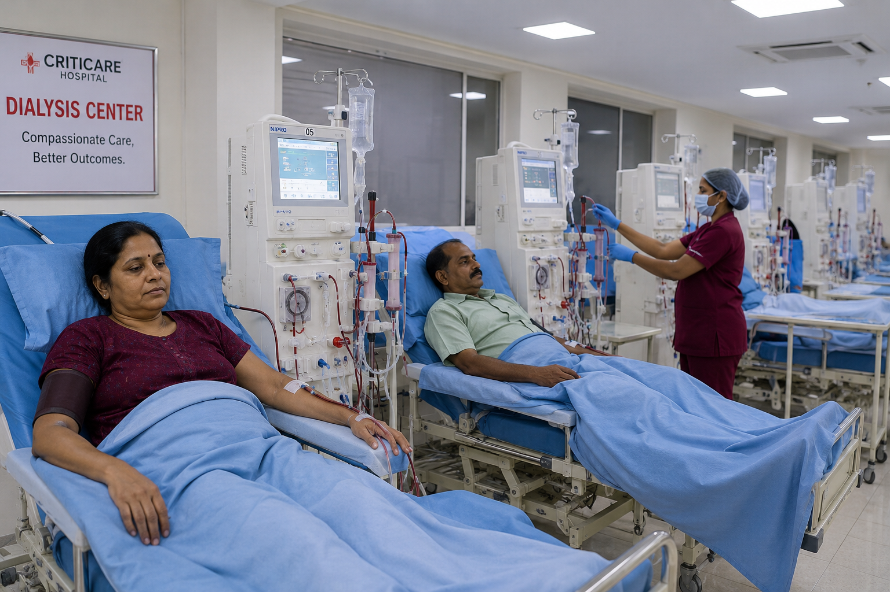

Providing safe, reliable and compassionate dialysis services with advanced technology, experienced specialists and personalized kidney care for every patient.

Emergency Support
Criticare Hospital's Dialysis Centre is dedicated to delivering safe, reliable and patient-focused dialysis care using advanced technology and internationally accepted treatment standards.
Our experienced nephrologists, dialysis technicians and nursing professionals work together to provide personalized treatment, continuous monitoring and long-term kidney care support.
Modern machines ensuring effective and safe treatment.
Expert nephrologists and trained dialysis professionals.
Dedicated hygiene protocols to maximize patient safety.
We provide advanced dialysis treatments and kidney care services tailored to the individual needs of every patient.
Regular dialysis treatment for patients with chronic kidney disease and kidney failure.
Immediate dialysis support for critically ill patients requiring urgent treatment.
Specialized dialysis care for critically ill patients admitted to intensive care units.
Expert evaluation, diagnosis and treatment planning for various kidney disorders.
Guidance and management of AV fistulas and vascular access required for dialysis.
Continuous monitoring, counseling and personalized care plans for long-term dialysis patients.
Dedicated kidney care backed by modern technology and compassionate healthcare professionals.
Modern dialysis machines designed for efficient and reliable treatment.
Experienced nephrologists and trained dialysis professionals.
Strict hygiene and sterilization protocols for patient safety.
Comfortable environment with continuous care and monitoring.
Comprehensive medical evaluation and dialysis planning by our specialists.
Vital signs monitoring and preparation of dialysis access and equipment.
Blood purification process performed under continuous expert supervision.
Post-treatment observation, counseling and follow-up recommendations.
Our experienced nephrology team provides comprehensive dialysis care, emergency support and personalized treatment plans to help patients maintain a better quality of life.
Emergency Dialysis Assistance Available 24×7
+91 80809 26999